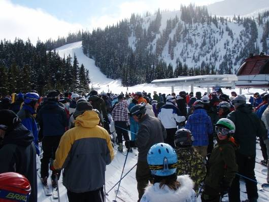
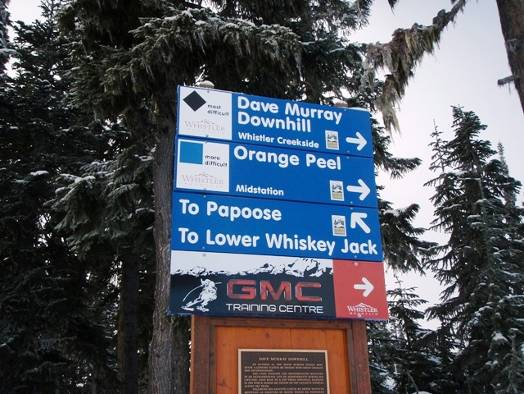
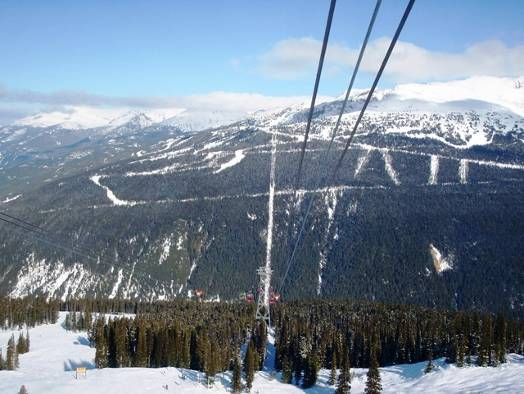
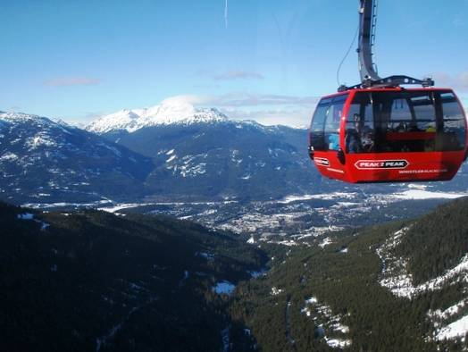
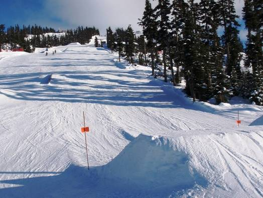
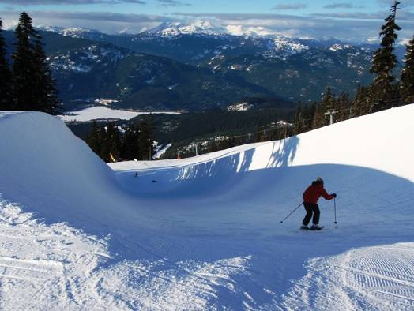

□4日目(2/15)Squamish⇔Whistler (3)
朝食は冷凍食品の春巻き＆チーズ入りミートパイ、シェルパスタ入りのチキンスープなど。これにポテトサラダやジュースが付くはずだったのだが、なんと冷蔵庫にしまっておいたはずが消えていた！名前まで書いてあったのに。おそらく別の宿泊者に盗られてしまったのだろう。残念だ。

今日はMt.
Whistlerと、Mt. Blackcombの両山で滑ることに。直登はウィスラービレッジでお休み。天気は今日も最高。ダイヤモンドダストも輝いている。日曜なので人も多い。まずはウィスラー山へ。3人なのでリフトに相乗りしてくる人が多い。カナダの人は僕たちが日本人だと分かっていても結構気軽に話しかけてくる。大体の話はなんとなく分かり、片言で返事もできた。どこから来たの？とか、日本食っておいしいよねっていう様な話題が多かったが、ある時おもろいカナダ人が僕らのリフトに乗ってきた。その人は、最初は普通の良くある話題で話してきたが、次第に下ネタを連発し始める。といっても英語の下ネタを理解できたわけではない。なぜ下ネタかと分かったかというと、股間の辺りの大きなジェスチャーである。41歳と言っていたが、とても面白い人だった。

初日に回れなかったコースを滑る。デコボコ斜面に無数に生えている木の間をすり抜けながら滑る林間コース”Staccato Glades”(スタッカート･グレイズ)は小回りが要求され、スリルがあって楽しい。また、オリンピックアルペンスキー種目で使用される”Dave Murray Downhill”(デイブ･マーレイ･ダウンヒル)という上級コースは、コブのない急斜面がずっと続くすばらしいコース。スピードが出すぎて、転ぶことでしかコントロールできなくなるといった事態にもなってしまった。これまでにもワールドカップのコースとしてたびたび使用されているらしい。

まだまだ滑れていないコースはたくさんあるものの、お昼からは2008年に新しく完成したWhistler、Blackcomb間の4.4kmを架け渡す、ゴンドラ”PEAK 2 PEAK”に乗り、ブラッコム山へ。ゴンドラ駅間にある支柱はわずか4本。両山間にある谷の400m以上上空を通過していく。支柱が全くない区間の距離は3.024kmで、これは世界一とのことだ。遥か下にはウィスラービレッジや、完全に凍りついた湖、Sea to Sky Hwy.まで見える。


ブラッコム山に到着し、昨日も楽しんだBlackcomb Glacierをもう一度訪れる。今度は、昨日は滑っていない辺りを狙って行く。やはりこの氷河には、連続で来ても同じくらい感動するほどの偉大さがある。その後、さまざまなコースを楽しみ、ジャンプ台などがあるパークにも突入。このパークのアイテムには難易度別にS･M･Lの表示が付いている。”L”の表示が付いたジャンプ台は巨大で、大ジャンプして空中で回転しているボーダーを観察していると、開いた口がふさがらなくなる。そんな中僕らは”M”のジャンプ台に突入！うまくいったり、痛い目にあったり・・・。さらに堀部はハーフパイプにもスキーで挑戦していた。


スコーミッシュに帰宅。今夜の夕食はSpecial Menu！スーパーで大きなロブスターを丸々1匹購入したのだ。オーブンでロブスターを丸焼きにしていくと、黒っぽかった色が、鮮やかな赤色に変わっていく。焼きあがったら背中から一刀両断。尻尾辺りに身がたっぷり詰まっている。身はとってもプリプリしていて、バターをつけて食べると最高にウマい！！ハサミも割って中の身をいただいた。もう一品はベーコン入りお好み焼き。紫キャベツを使ったため、全体に紫色。味付けにはコンソメを使ったが、以外に和風な味に。食べる時には、塩コショウを振ったり、バターを載せたり、メープルシロップをかけてみた。